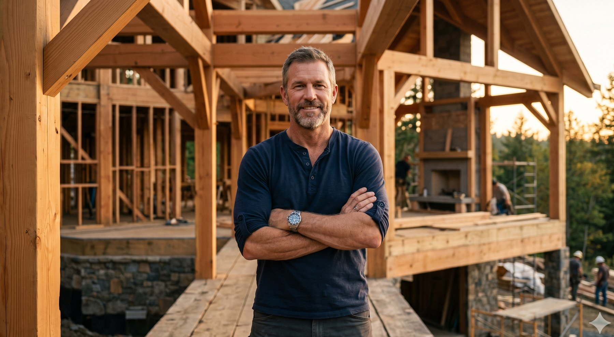

Park Cities
Highland Park
The historic core of the Park Cities. Eighteen homes since 2010, working with most of the architects who shape the neighborhood.
We design and build a small number of custom residences each year for clients who care as much about how a home is made as how it looks. Every detail is decided by the principal who runs the project, not delegated to a project manager.

I started Ashworth & Foster in 2009 because I wanted to build the way the great Park Cities homes were built before us. Slowly. By hand. With trim that aligns and hardware that feels right. The kind of detail you do not have to point out, because the room itself does the explaining.
Before this firm, I spent twelve years working under two of the most exacting builders in Texas. I learned that the difference between a good house and a great one is roughly six thousand small decisions made when nobody is watching. We are still making those decisions.
I personally walk every project at least weekly. The architect you choose is your partner. The principal you choose is your advocate. We accept four to six commissions a year, and that limit is not negotiable.
William Ashworth · Founding Principal · Texas Tech School of Architecture, 1997
We accept commissions only within neighborhoods we know well enough to anticipate. Below are the four where most of our recent work has happened.
If you have a lot in mind, we are happy to walk it with you →
Each home is photographed after completion, never during staging and never before the landscape has matured. Galleries are organized by residence; each contains exterior, interior, and detail studies.
Most of our work is commissioned. Occasionally we build speculatively on a lot we cannot resist, or we hold a lot until the right architect-and-owner pairing finds us. The current list is below.
Wilson Fuqua, architect.
InquireStocker Hoesterey Montenegro, architect.
InquireArchitect to be determined with the buyer.
InquireAll inquiries are answered personally by William or Daniel within two business days. Pricing is shared in conversation, after we understand which finishes and which architect you are envisioning.
We accept four to six new projects per year. That number is not aspirational. It is the limit of what one principal builder can supervise without delegating decisions that should not be delegated.
Every project begins with a conversation, not a contract. We want to understand how you will use the house, what time of day you spend in which rooms, and what you have collected over a lifetime that needs a place to belong.
Our role is to translate the architect's drawings into a built home that improves with age. The trim has to align. The hardware has to feel right in the hand. The HVAC has to be silent. These are not optional upgrades. They are the work.
New construction from a clean lot, working with the architect of your choosing. Typical project duration 18 to 24 months.
Down-to-studs renovation of a Park Cities or Preston Hollow home with character worth preserving. We are particularly experienced with 1920s through 1950s Georgian, Tudor, and ranch homes.
Pool houses, guest quarters, garages, and primary-suite additions matched to the existing architecture so the seam disappears.
We engage during architectural design to provide constructibility review, budget validation, and material sourcing before drawings are finalized.
A Texas Tech graduate with twenty-two years of building experience in Park Cities and Preston Hollow, William founded the firm in 2009 to do fewer projects with more attention. He still walks every active jobsite, every week, without exception.
A Texas A&M graduate with fifteen years of building experience, formerly with a national production builder, Daniel joined as a principal in 2014. He leads pre-construction estimating, vendor relationships, and the firm's standards for finish carpentry and millwork.
A UT Austin Architecture graduate, Anna oversees every active project on the calendar. She translates architect intent into field execution, manages submittals and procurement, and is the steady voice clients hear most weeks of a build.
Most of what we build never appears in print. The work below is what our clients and our architects chose to share.
We finished six weeks past our original date and within one percent of the budget we set together at the start. There were change orders, of course. Each one was discussed in person before any work began, and we never received an invoice that surprised us.
What we appreciated most was the silence on the jobsite. Decisions had been made in advance. The trades knew what they were doing. The principal answered the phone when we called, even on Saturdays. It was the calmest construction project either of us has lived through.
Quiet writing about the work, posted when there is something worth saying. We do not publish on a schedule.
Hardware is the part of a kitchen your hand touches twenty times a day. Tile is the part you look at. Most owners spend three months choosing tile and an afternoon choosing hardware. The order should be reversed.
Continue readingA 1986 Highland Park residence by an architect we admire, returned to forty years later with the original owners still in residence. Notes on what survived, what failed, and what we now build differently because of it.
Continue readingIt happens on every project worth doing. The trick is not to avoid the disagreement. The trick is to have it early, in person, with the drawings on the table and a willingness to be wrong.
Continue readingAn unhurried conversation about the site, the architect, the program, and the timeline. We listen first. By the second meeting, we share an honest budget range based on comparable projects in the same neighborhood.
We engage during architectural development to provide constructibility review, value engineering, and detailed cost modeling. Major material decisions are sourced and priced before drawings are finalized, not after.
We work alongside your architect, not under them and not around them. Submittal review, RFI cadence, and shop drawing approval happen on a schedule the entire team agrees to before mobilization.
The principal assigned to your project supervises trades on site, weekly. You receive a written progress report each Friday with photos, schedule status, decisions pending, and any cost movement, however small.
A formal walkthrough, complete operations binder, and a two-year workmanship warranty backed by a one-year follow-up visit at the change of seasons. We return when something settles, even years later.
We are happy to talk through what you have in mind. Discovery conversations are confidential and do not commit either of us to anything.
Schedule a Discovery Conversation